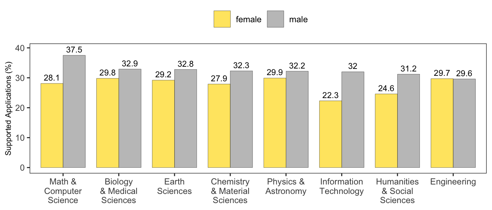
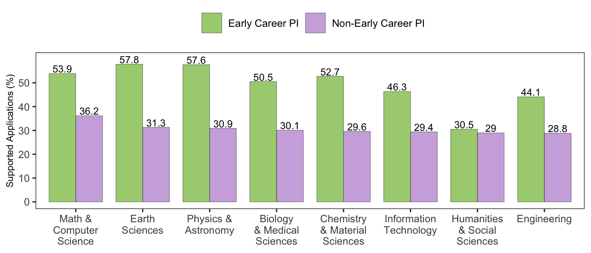

ATLC25
Supplementary Materials
Funded and unfunded science in Russia: A new dataset and longitudinal analysis
Figure S1: An example of a project card from which data was scraped.
Note: The card was automatically translated into English for the convenience of readers; the original dataset is in Russian.
Figure S2: Proportion of supported applications by gender.

Figure S3: Proportion of supported applications by PI experiance.

Table S4. Gender assignment and number of grant applications.
Gender assignment. Female-specific endings of Russian family names include “-ва”, “-ая”, “-на”. Male-specific endings of family names include “-ов”, “-ий”, “-ин”, “-ев”, “-ый.”
| Field | Overall (N=304173) |
|---|---|
| female | 57721 (19.0%) |
| male | 185593 (61.0%) |
| unknown | 60859 (20.0%) |